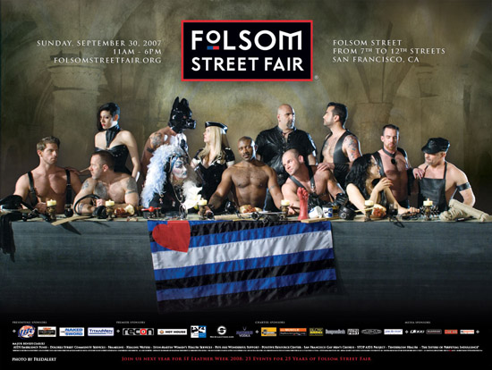

Levél levél hátán, még szerencse, hogy a BlogGép automatikusan
behányja nekem ide mindet, és nem kell copypaste-délutánt tartanom. Nézzük, mit reagáltatok arra,
amit mi itt firkálgattunk.
Kitalátor írta:Sziasztok!
A Droidzónába szánnám, kommentnek hosszú:
A "cigány a
birizgefán" sorozathoz illik a kövezkezô történet is a '90-es évek elejérôl:
A rasszista áram
nem a képzeletetek szüleménye. Van Debrecenben egy elhagyatott részen egy bontottanyag-telep, ott
tárolták a felszedett kockaköveket, kiszedett betonpadokat, beton emlékműgiccseket. Ezen a telepen
állt egy ôrház, és körbe volt kerítve. Az Önkormányzat el akarta adni.
Elôször is
elbocsátottálk az ôröket. Erre pár napon belül ellopták a drótkerítést egy közeli kastélyromban lakó
megélhetési üldözöttek. Egy hivatali dolgozót megbíztak azzal, hogy értékesítse a faházat. Több
hónapig elhúzódott a dolog, mire talált olyan vevôt, aki az elvárt össszeget hajlandó volt
kifizetni. Valami sugallat folytán a vevô ragaszkodott a helyszíni aláíráshoz, kikocsiztak, és
szaporapislogást kaptak: eltűnt a faház.
A telek a kerítés vonala mellett régi öntöttvasból
készült kandeláberekkel volt megvilágítva, amelyekrôl a kerítés eltűnése után egyre-másra fogytak az
ajtócskák, sôt, szépen, egyesével maguk a kandeláberek is kezdtek elpárologni, amíg egyszer csak
megtörtént a baj, és az egyik Rostás vagy Lakatos kis híján megmurdelt , mert a estefelé járt az
idô, és a közvilágításra kötött berendezés "szerelés" közben áram alá került.
Eddig sima a
történet, de a durva utána jött.
Másnap az illetékes vezetônél kezdett a kisebségi
önkormányzati vezetô, meg a területil SzDSz-es képviselô, hogy felelôsségre vonják. A fônök persze
nem igazán ismerte a részleteket, ezért behívatott minket. No akkor mégegyszer elmondták, hogy ez
szörnyű, hogy szegény sokgyerekes apának beleégett a kezébe a vasfűrész, és hogy szűtessük meg a
balesetveszélyt, mert ott gyerekek is játszhatnak, sôt, fémdarabokat is keresgélhetnek...
Máskor is nyugodt, megfontolt kollégám erre csöndesen csak annyit mondott, hogy ha majd a TITÁSz
lekapcsolja az áramot az alumínium-lelôhelynek is kiváló villanyoszlopokról, hogy nehogy baja
legyen a szinesfém-gyűjtônek, akkor majd mi is áramtalanítjuk a telepet....
Olyan megnémult
hôbörgôgépeket azóta sem láttam.
Egy kis röhögcsélés után
lapozzunk. A Bombagyár Rádió adásában is említettük, hogy Franco Frattini, fő EU-s seggfej
cenzúrázni akarja az Internetet, nehogy már bombarecepteket találjon rajta akárki, aki lusta venni
egy kémiakönyvet. A kezdeményezés ennél távolabbra is mutat.
Zeerocool
írta:Hello. Éppen az sg.hu-n olvasgattam a híreket, amikor
valamin fennakadtam. A téma az hogy az EU cenzúrázza-e a bombagyártással kapcsolatos oldalakat. Ám a
cikkben szerepelt egy ennél érdekesebb dolog is, idézem:
"A kérdés legutóbb az európai
uniós tagállamok belügy- és igazságügyi minisztereinek lisszaboni csúcstalálkozóján merült fel. Mint
ismeretes, Franco Frattini szeptember 10-án indítványozta, hogy az Európai Unióban meg kellene
akadályozni a pokolgépek készítésére vonatkozó internetes kereséseket. Az ötletet azonnal támadta az
eco német szakmai szervezet és a Google is. A mostani lisszaboni csúcstalálkozón viszont Rui Pereira
portugál és Wolfgang Schäuble német belügyminiszter kijelentették, hogy támogatják Frattini
elképzeléseit, sőt Schäuble - például az Izrael elleni kampányt folytató honlapokkal - még ki is
bővítené a betiltandó portálok körét. Az ugyanakkor nem tisztázott, hogy eltávolítanák ezeket az
oldalakat vagy blokkolnák a hozzájuk való hozzáféréseket."
Szóval a csodálatos
demkratikus EU-ban egyes elképzelések szerint cenzúráznák az izrael-ellenes oldakalat!! Nemlehet
hogy már megint rosz oldalra álltunk, mint ahogy a történelem során már sikerült egy-kétszer?
Zc
Én bizakodó vagyok. Aki mellé mi odaállunk, az tuti elveszít minden háborút, vége
lesz, mint a botnak, a helyét is sóval hintik be és bevásárlóközpontot építenek rá. Tehát támogassuk
csak Izraelt és az EU-t!
Gábor Zsolt írta: Tisztelt Tomcat!
A Ságvári cikkel kapcsolatban írtam volna
kommentet, de úgy tűnik persona non grata, vagy balfasz vagyok, mert nem tudtam írni. Igaz a
koromnál fogva, nekem kimaradtak a számítástechnikai alapok (HT1080Z az volt meg BRG MK 27-es
beolvasó).
A cikk jó és több mint elgondolkodtató, de engedd meg hogy a pontosítás
kedvéért megjegyezzek néhány dolgot. Inkább tőlem jöjjön a "kritika", mint az okostojás pásztortibor
csámcsogjon néhány történelmi tévedéseden. A cikk élvezeti értékéből mitsem von le, meg hát
hajnalban az ember általában aludni szokott :)
1. 1944 július 27.-én nem folytak harcok
Erdélyben, erre csak a románok árulása (1944.augusztus 23.) után nyílt lehetősége a szovjet-román
hordáknak. Dél-Erdélybe 1944 augusztus 26.-án törtek be, ekkor lépték át a magyar-német csapatok a
II. Bécsi Döntés-ben meghatározott határvonalat és vették fel a harcot a túlerőben lévő
ellenséggel.
2. Ságvári alattomos módon három nyomozót sebesített meg: Cselényi Antal
M.Kir. Államdetektívet a jobb vállán, Pétervári János r.őrmestert hasbalőtte - ennek a sebesülésnek
köszönhetően, Pétervári később belehalt a "hős Ságvári önvédelmi fellépésének köszönhetően" - és
Kristóf László csendőr őrmestert a jobb combján találta el, akinek el is törte a lövedék a combját.
Kristófot pechjére még Pétervári a karján eltalálta, a Ságvári által előidézett dulakodás során.
S.E. mint a helyi nullszériás Terminátor vadul lövöldözni kezdett és miután revolvere csütörtököt
mondott kirohant az utcára, de az utána rohanó Palotás Ferenc csendőr törzsőrmester és a sebesült
Cselényi lövéseinek következtében elvágódott, majd a kórházba szállítás közben életét vesztette. A
nyomozókat ezután magas katonai kitüntetésben részesítették. 1945 után Cselényi külföldre távozott
és soha nem tért haza Magyarországra, az itthonmaradtakat (Kristófot és Palotást más csendőrök
társaságában) 1959 őszén a kommunista (i)gazságszolgáltatás - a forradalom megtorlásának lázában
égve - ártatlanul kivégeztette. A 2005-ös perújrafelvételben rehabilitálták a kivégzett csendőröket
és fegyverhasználatukat jogszerűnek minősítették.
A közelmúltban beszélgettem egy idős
tanáremberrel, aki a szegedi Ságvári Endre Gimnázium tanára. Elmondta, hogy az iskola diákjainak
90%-a nem is tudja, ki volt annak névadója. Hogy ki volt? Egy gyáva sunyi, alattomos gyilkos, aki
előbb lőtt, de már kérdezni nem volt ideje (szerencsékre).
Üdv.:
ava(n)t-guard
Ennyit Ságváriról, valószínűleg több
irányból már nem lehet megvizsgálni, hogy kijelenthessük, hogy onnan nézve is egy patkány senki
volt. Most Pé levele következik, amelyben megdicsér bennünket (köszönjük), és hozzáfűz pár szót a 8.
adásunkban említett, újfajta tömegközlekedési eszköz történetéhez.
Pé
írta:Sziasztok!
Remek volt a legutóbbi (8.)
adás.
Az említett tömegközlekedési módról a Wikipedia linket közzétehetnétek - gondolom,
nem csak engem érdekelt:
http://en.wikipedia.org/wiki/Personal_rapid_transit Londonban jövőre üzemel, gyanítom
ezzel nem fogunk annyira sietni, mint a földalattival.
P.
Kaptunk egy rövid
röpdolgozat-vázlatot is, amelyet nyugodtan ki lehet töltetni a marxista történészekkel. Valószínűleg
egy sem fog átmenni. A téma: 1956.
Dobossy Sándor írta:Sziaaztok Bombagyárosok!
az 5-ei adás első felében elhangzott Kéri Edit
könyvajánlón felbuzdulva szeretném a figyelmetekbe ajánlani Szeredi Kálmán '56 kutató és volt
történelem tanárom tanulmányát!
Sajnos ide nem tudok csatolmányt illeszteni és a
regisztrációmat sem bíráltáok el, ha nem haragszotok, egyszerűen csak bevágnám!
Hamarosan
itt az emléknap megint, sok ma is aktuális megoldásról is szó van benne (lsd. pl. ismeretlen
esőkabátosok)
"„Fecseg a felszín, hallgat a mély.” (József Attila: A
Dunánál)
56 kérdés ’56-ról
a történészekhez és politikusokhoz
„Kinek a forradalma?” teszi fel a sokat sejtető címadó kérdést Kahler Frigyes és M.
Kiss Sándor az 1990-ben megjelent könyvükben, melyben az 1956. októberi sortüzeket írják le.
Megtalálták már a választ?
Miért lehetséges, hogy ötven évvel a történések után is
„sok a tisztázatlan kérdés”, „nem kutathatók a levéltárak”?
Miért
van az, hogy a még ma is élő sok-sok szemtanú, résztvevő elmondásai, leírásai nem tükröződnek
vissza a „tudományos” igényű történelmi tanulmányokban, tankönyvekben?
Miért csak Gerő Ernőt, Kádár Jánost, Nagy Imrét, Tildy Zoltánt, Andropovot stb.-t idézik? Azt
talán még sem gondolják, hogy 1956 az ő forradalmuk volt?
Lehet, hogy az ’56-osok
érzelmileg „túlfűtöttek”, talán nem minden részletre emlékeznek pontosan, de azért nem
valószínű, hogy hazudnának úgy, mint ahogyan tették azt harminchárom éven keresztül a Kádár-korszak
„történészei”.
Nem gondolják, hogy komolyabban illene venni őket?
Pl.
Miért hisznek még mai is inkább Dudás Istvánnak (mosonmagyaróvári századparancsnok 1956-ban) és
Hollós Ervinnek, mint az ott jelenlévő tüntetőknek, saját katonáinak abban, hogy hol tartózkodott a
sortűz megkezdésekor?
Nem érzik azt a felelősséget, hogy a megosztottság,
érdektelenség oka éppen az, hogy Önök nem tudják, vagy nem akarják az igazságot teljes mélységében
feltárni?
Miért akarják az érdektelenség felelősségét áthárítani a családokra,
iskolákra, diákokra?
Fel kell tennünk a kérdést: CUI PRODEST?
Azt a
kérdést is feltesszük: hisznek-e Önök (történészek) saját és egymás kutatási eredményeikben?
(Ha igen, válaszolják meg a következő kérdéseket is.)
Igaz-e, hogy a forradalom és a
szabadságharc, mint történelmi kategória, nem ugyanazt jelenti?
Miért nem határolják
be, hogy 1956 októbere-novembere meddig forradalom és mikor, miért, hogyan megy át szabadságharcba?
Ugye tudják, hogy a szovjet csapatok Magyarországon csak átmenetileg tartózkodhatnak,
az osztrák államszerződés (1955. május 15.) megkötése után 90 nappal el kell hagyniuk az ország
területét?
Elfogadják-e azt, hogy a Varsói Szerződés (1955. május 14?!) létrejöttét nem
csupán az NSZK-nak a NATO-ba történő felvétele, hanem az osztrák államszerződés is sürgette?
Reméljük, azt sem vitatják, hogy ennek alapján maradhatott Magyarországon a Különleges
Hadtest?
Bizonyára azt is tudják, hogy kidolgoztak (1956. július 20.) egy szigorúan
titkos tervet, „a Különleges Hadtest részvétele a társadalmi rend helyreállításában
Magyarország területén” címmel?
A hadművelet a „VOLNA” magyarul
„HULLÁM” fedőnevet kapta, a végrehajtást a „KOMPASZ” vagyis
„IRÁNYTŰ” jelszó elhangzása után kellett megkezdeni?
És a jelszó elhangzott!
Mikor? Önöktől tudjuk, 1956. október 23-án 22 órakor „... a társadalmi rend fenntartása
érdekében a Különleges Hadtest csapatai vonuljanak be Budapestre.”
Igaz-e, hogy
ezen a napon kapott parancsot a magyarországi bevonulásra a Kárpáti Katonai Körzetben állomásozó
szovjet csapatok nagy része is?
Ezek szerint ’56. október 31-én már csak
„újabb” szovjet csapatok érkeznek?
Önök számára nem döbbenetesek az
alábbi mondatok?
„Titó és Hruscsov brioni tárgyalásaiból ismerjük a szovjet vezetés
koncepcióját, azt, hogy Magyarországon olyan helyzetet kell teremteni, hogy Nagy Imre ismerje be,
hogy káosz, zűrzavar van, és nem lát kibontakozást. A cél az volt, hogy a szovjet beavatkozás, a
szovjet katonai invázió előtt ne legyen kormány, Nagy Imre mondjon le. Ezt az ügyet szolgálta
Szerov, aki már október 25-én Budapesten volt, Hruscsov személyes megbízásával és
teljhatalmával.”
És ki ez a Szerov?
Ha Önök is tudják, miért nem
kürtölik világgá, hogy Mikojannal és Szuszlovval együtt már ’56. október 23-án Budapestre
érkezik Szerov, a szovjet titkosszolgálat vezetője, és Malinyin, a szovjet hadsereg vezérkari
főnökének első helyettese?
És miért nem írják a tankönyvekben vastag betűkkel, hogy
október 24-én Piros László belügyminisztert leváltják és Szerov – ismételjük, a KGB, egy
idegen ország titkosszolgálatának vezetője - átveszi az ÁVH irányítását?
Az sem tűnt
fel Önöknek, hogy Mikojan és Szerov Moszkvával történő táviratváltásait, jelentéseit percre pontosan
ismerjük, de az október 25-26-27-i napokról semmit sem tudunk?
Nemde ezekben a napokban voltak
a sortüzek?
Miután szinte mindent tudunk a szovjetek terveiről, lépéseikről, addig
vajmi keveset magyar kiszolgálóikról.
Nem furcsa ez?
Valamit azért tudunk, hogy a
következő kérdésekre is választ kapjunk.
Tudják-e, hogy 1955. júniusában, több ÁVH tisztet a
Szovjetunióba visznek egy „speciális” továbbképzésre?
Tudják-e, hogy 1956.
február elsején, Piros László belügyminiszter (korábban az ÁVH főnöke), közülük Szalva Jánost, a
zöld ÁVH (határőrség) országos parancsnokává, Fekszi Lászlót győri kerületparancsnokká, Dudás
Istvánt mosonmagyaróvári századparancsnokká, Fehér Józsefet kék ÁVH (politikai rendőrség) őrnagyot,
a rádió védelmét ellátó egység parancsnokává nevezi ki?
Nem volna érdemes utána
nézni, hogy kik voltak velük együtt a Szovjetunióban, és hazatértük után hová helyezték őket?
És mi van a kék ÁVH-sokkal?
Mi az ő szerepük az első napokban?
Csak nem ők voltak azok, akik fegyvereket akartak osztogatni a tüntetőknek, mire ők azt
válaszolták „... a mi fegyverünk a zászló”?
Csak nem ők voltak azok, az
„ismeretlen esőkabátos emberek”, akik a sortüzek felé irányították, vezették a békés
tüntetőket?
Csak nem ők voltak azok, akik őrizetlenül hagyták a Lámpagyárat, a fóti
nagy fegyverraktárt, és fegyvereket vittek a Kilián Laktanyába, ahol a „megbízhatatlan" kulák
fiatalok katonáskodtak?
És akkor, hogyan lehet leírni azt egy történelem tankönyvben,
hogy október 24. hajnalban: „a főváros különböző pontjain folyt a harc. A felkelőknek
mindenek előtt fegyverhez kellett jutniuk, ezért laktanyákat, rendőrőrsöket, fegyvert gyártó
üzemeket támadtak meg és foglaltak el.”?
Csak nem a Parlament épületébe sebtében
átköltöztetett Kossuth-rádió, Szerov által manipulált álhírek nyomán él még mindig ez a tévhit?
Mert akkor hogyan lehetséges, hogy „október 25-én délelőtt, fegyvertelen, békés
tüntetők vonulnak az Országház elé, és közben barátkoznak a szovjet páncélosok
legénységével”?
Igaz-e, hogy arra az álhírre tódulnak az emberek a Parlament
elé, hogy Nagy Imre beszédet fog mondani?
Miért vezényelnek a Parlament
’védelmére’ ilyen hatalmas erőket, békés, fegyvertelen tüntetőkkel szemben?
Miért kell még Orosházáról is fölvezényelni egy zöld ÁVH-s alakulatot a Földművelésügyi
Minisztérium padlására?
Miért nem tetszik Szerovnak – aki a Parlament épületében
tartózkodik -, hogy a szovjet katonák, és az emberek barátkoznak egymással, a tankok ágyúinak
csövébe zászlót tűznek?
És hogyan kerül „spontán” 20-30-ezres tömeg
Budapest utcáira?
Igaz-e, hogy október 24-25-én a vonatok csak Budapest felé
közlekednek, és hazafelé már nem szállítják az ingázó munkásokat? Ki adott erre parancsot?
Ez nem annak az ördögi tervnek a része, hogy minél nagyobb legyen a káosz és a zűrzavar?
És 11-óra körül a Földművelésügyi Minisztérium tetejéről eldördül a sortűz!
Nem gondolják, hogy itt ér véget a magyar nép békés, örömteli forradalma és kezdődik a
szabadságharc?
Miért hazudnak a középiskolás diákoknak: „október 26-án, már
nemcsak a tüntetések, de a harcok is kiterjedtek az egész országra. Ekkor dördült el a
mosonmagyaróvári sortűz, melynek közel száz halálos áldozata volt”?
Hogyan lehet
harcnak nevezni azt, hogy békés, fegyvertelen tüntetőket állig felfegyverzett, zöld ÁVH-sok várják,
és kíméletlenül közéjük lőnek?
Azt azért Önök sem hiszik el, - Hollós Ervin nyomán -,
hogy Mosonmagyaróváron titkos iratokat akartak megszerezni a laktanya pincéjéből a békés tüntetők?
De hogyan szerveződnek vidéken a tüntetések, október 26-27-én, mintegy 40-50 helyen?
Tudják-e, hogy a pártbizottságok rendelik ki az utcára a diákokat, munkásokat
„tüntetni a pesti forradalom mellett”?
Miért nem kérdezik meg a korabeli
pártvezetőket, különösen Biszku Bélát, hogy talán őket is a Szovjetunióban készítették fel?
Ugye Önök is látják? Bezárult a kör: szovjet titkosszolgálat - magyar ÁVH - magyar
pártvezetők.
És kezdődik a szabadságharc, „mert egy nép azt mondta: elég
volt”.
Nem gondolják, hogy a tankönyvekben illene erről is írni? Nem kellene megemlíteni
néhány szabadságharcos nevét, fényképét?
Nem gondolják, hogy ezt a forradalmat és
szabadságharcot nem az a néhány politikus vívta (jól, rosszul), hanem a magyar nép, a „pesti
srácok”?
És ha érzelmileg akarnának hatni ma a magyar népre, a fiatalokra, nem
kellene úgy ismerni mindenkinek Tihanyi Árpád – a megtorlások során kivégzett győri tanár -
búcsúlevelét, mint ahogy Damjanich tábornokét?
„Utolsó soraim, melyeket hozzátok
intézek.
A haláltól nem félek, hat hónap alatt a halálos cellában –ittlétem alatt a
40-45 személy kivégzése- megismertetett és hozzászoktatott annak gondolatához. Körülöttem pedig
aratott a halál, a cellámból is két embert vittek el.
Nem izgulok, nem remegek és eddig
senki sem félt, mindenki hősiesen halt meg.
Az Édes Jézus nekem is adott erőt és
bőségesen kegyelmet e sors elviseléséhez.
Tudjátok, az igazságért meghalni dicsőség.
Krisztusnak is azért kellett meghalnia, mert az igazságot hirdette a zsarnokság és a gazság
felett. Nem a földi élet az ember célja, hanem a túlvilág, az Istenhez való eljutás.
Aki
az igazságért hal mártírhalált, az eljut Istenhez.
Szent Pál Apostol mondja: „Mit
ér az embernek, ha az egész világot is elnyeri, de lelkének kárát vallja?”
A
világot nem nyertem el, mert szerényen éltem, de megtaláltam az Istent.
Legyetek
megnyugodva, a Jóistennel kibékültem és amit még el kellett számolnom, azt elszámoltam.
Mindenszentekkor valahol égessetek értem gyertyát, és pár szál virágot tegyetek a sírra. Szentmisét
mondass értem és én igen sokat fogok a Jóistennél imádkozni.
Ha egyszer mód lesz rá,
vitesd haza holttestemet.
Édes, drága kis Máriám, gyermekeim!
Szerettem volna
még élni, szerettem volna, mert benneteket itthagyni, ez a szörnyű. Elválni azoktól, akik nekem az
életet jelentették.
Köszönöm, hogy fáradtál életem megmentéséért, de a Jóisten akarata
elkerülhetetlen.
Bátran, felemelt fejjel, büszkén halok meg ezzel az utolsó szóval: Éljen
Krisztus Király és a Haza!
Isten veletek! Imádkozom értetek!
Ölel, csókol
benneteket utoljára édesapátok.
És miért nem mernek Önök a szabadságharcosok szemébe
nézni, megnevezni és elítélni az árulókat?
És miért nem ünnepelnek Önökkel együtt az
igazi ’56-osok?
Ne keressék a választ! Megadja az ő nevükben Márai Sándor:
„Az emberi perben, amikor csak lehet, felmentő ítéletet hozni. Csak akkor nem, ha a vádlottat
lassan és hidegen kitervelt árulás bűnében találod bűnösnek. A gyilkosnak is hamarább bocsátani meg,
mint az árulónak.
A gyilkos legtöbbször indulatban cselekszik, és egész sorsával fizet
érette. A gyilkos és az áldozat legtöbbször kötve vannak egymáshoz, valamilyen mély és érthetetlen
törvény szerint. A gyilkos legtöbbször bitóra megy. De az áruló szemedbe néz, terveid faggatja,
veled sóhajt, nyög, fogadkozik. Az árulónak ne bocsáss meg soha. Az árulónak ne irgalmazz. Aki
egyszer elárult – férfi vagy nő, mindegy , annak számára nincs többé vizsga, mentség,
feloldozás. Száműzzed életedből. Részvét nélkül nézzed sorsát. Közösségben és magánéletben ő az
utolsó ember, nincs mentség számára.” (Füves könyv)
Sátoraljaújhely, 2006.
augusztus 29. Szeredi Kálmán"
Köszönöm hogy
végigolvastad!
További sikeres munkát és erőt hozzá!
ifj. Dobossy Sándor
Következő levelünk újabb zsidó ármányt leplez le. Aki akar, járjon
utána...
Snowman írta:Halihó!
Hallgattam a multkori
adást, és az ott elhangzott finnes-pálinkás dologra szeretnék reagálni. Ugyanis még mi, magyarok is
hajlamosak vagyunk azt hinni hogy a pálink valami régi magyar szokás. Azonban nem régiben volt
szerencsém beleolvasni Vas Gereben A régi jó idők című 1855-ös könyvébe. A nyelvezet kissé
nehéskesen érthető, ezenfelül, rengeteget kéne gépelni, ezért eltekintek pontos idézetektől, de igen
csak érdemes elolvasni az "Én nemzetem zsidó népem" illetve a "Pálinkás zsidó, czigány koma" című
fejezeteket, jelen téma kapcsán különösen az utóbbit, ám megjegyzendő az egész könyv televan zsidó
utalással, akkoriban ez még nem volt baj. Egy szó mint száz, az említett fejezet szépen, tételesen
leírja hogyan is szoktatta rá Jakab a falut a pálinkára. Érdemes még az "Egy ember, ki a jég hátán
is meg akar élni" címü fejezetet is elolvasni, ahol megismerkedhetünk a drága Klein úrral.
Az
említett mű megtalálható elektronikus formában a neten, nem hiszem hogy bármit változtattak volna
benne, nekem eredetiben van meg.
SirRobin nem azonos Robinnal, de ő is írt nekünk.
SirRobin írta:Sziasztok!
Egy fájdalmas élményem akarom
elmesélni nektek, ha másért nem, hát azért, hogy egy bizonyos cég rossz hírét keltsem.
Alapítottunk egy egyesületet, amihez felvarrót szeretnénk csináltatni. A felvarró tervek el is
készültek, így nekiálltam keresgélni cégeket, akik majd adnak egy árajánlatot és eldönthetjük, hogy
kivel csináltassuk. Rátaláltam a Műhímző és Zászlókészítő Ipari Szövetkezet honlapjára
(http://www.zaszlonet.hu/2.html). Megnéztem a referenciákat és úgy gondoltam, hogy velük kéne
legyártatni a felvarrót. Felhívtam a Szent István körúti üzlet telefonszámát, bemutatkoztam kedvesen
és elmondtam, hogy szeretnék egy felvarrót. Megegyeztünk, hogy vigyek be grafikát és adnak
árajánlatot. Szerencsére valahogy a felvarró típusára terelődött a szó, mikor elmeséltem, hogy az
alapja a Nagy-Magyarország alakja lenne. Erre a hölgyemény megkérdezte, hogy visszük-e... Értetlenül
hallgattam egy darabig, majd nagy nehezen leesett, de azért visszakérdeztem. - A Nagy-Magyarország
alakot vigyük előre legyártva, műhímezve és ők a többit hímzik csak bele? - Igen - jött a válasz -
Nagy-Magyarországot nem vállalunk. Na ha ezt személyesen mondja, lehet, hogy morcosabban reagáltam
volna, így egy "köszönöm, viszhall" után letettem a telefont, de még vagy egy órán keresztül nem
tértem magamhoz. Remélem ezt a mocskos társaságot továbbiakban egyetlen hazafi sem fogja anyagilag
támogatni!
Ebben csak az az érdekes, hogy a fent említett
cég Szent István körúti üzletében nagy választékban kaphatóak árpádsávos és középcímeres zászlók.
Valószínűleg valami buzgómócsing marxista vette fel neked a telefont, akinek semmi köze a cég
egészének hozzáállásához. Érdemes lenne talán beszélned a cégvezetővel, hm?
A következő
levélben ismét a múltkori műsorunk kerül terítékre. Emlékezetes, hogy Gyurcsány Ferenc beterjesztett
egy törvényjavaslat-csomagot a közélet tisztaságáról, aminek hallatán Karsai László MSZP-s képviselő
elájult. Ő tudja, miért. Most megtudhatjuk, mi is volt ebben a csomagban.
Bebop
írta:Üdvözlöm a Bombagyár szerkesztőit!
Az első
adástól fogva követem munkásságotokat és bár nem minden hozzászólásotokkal értek egyet, - amely nem
feltétlenül baj, hiszen ez a demokrácia lényege, hogy mindenkinek lehet saját, eltérő,
különvéleménye - úgy gondolom online rádiótok, nagyon is fontos egy olyan országban, ahol az
éremnek, mindig csak az egyik oldala kap nagyobb nyilvánosságot .
Legutóbbi adásotokban,
mély sajnálatomra, csak röviden kommentáltátok az MSZP frakciógyűlését, amikor is Karsai képviselő
úr rosszul lett, ama bizonyos hét pont ismertetése kapcsán, amely tisztasági csomagként híresült el
a köztudatban.
Napokkal ezelőtt, Engem is foglalkoztatott a téma és ezzel kapcsolatban
szeretném megosztani, személyes gondolataimat Veletek.
Gyurcsány Ferenc miniszterelnök,
hétfői sajtótájékoztatója folyamán, ismertetette vázlatosan, 7 pontból álló tisztasági csomagját,
mely a kipattant Zuschlag-ügy kapcsán született meg, az állami és regionális korrupció
visszaszorítására. A tisztasági csomag bejelentése vegyes érzelmeket keltett csakúgy társadalmi,
mint politikai szinten. A korrupció visszaszorításának szükségességét senki nem kifogásolja, ám anál
inkább a csomag életre hívójának tisztaságát. Paradox, hogy ugyanazon személy indítványozza a
korrupció elleni harcot, akinek szerepe, egyelőre erősen vitatható a Zuschlag-ügyben. Egyértelmű,
hogy a miniszterelnök, menteni akarja, ami menthető, hiszen a közvélemény kutatások is azt
igazolják, hogy a kormány és a kormánypártok támogatottsága ismét jelentősen csökkent, az újabb és
újabb korrupciós botrányok miatt. A miniszterelnök igyekszik elhatárolódni és elhatárolni kormányát
is a kedvezőtlen eseményektől, amelyek saját fészkükből pattantak ki. Épp ezért is történhetett meg
az, hogy Gyurcsány Ferenc, felismerve a helyzetet, egymaga kívánt, a korrupció elleni harc élére
állni, úgy, hogy hét pontos csomagját, "elfelejtette" egyeztetni saját pártjával, illetve koalíciós
partnerével is, amellyel nem kis meglepetést okozott.
A kormányfő hétpontos csomagja:
1. Átlátható kampány- és pártfinanszírozást.
2. A pártok ifjúsági szervezetei legyenek
részei a pártfinanszírozásnak.
3. Pártközeli civilek ne kapjanak közpénzt.
4. Megalkotják
Európa legszigorúbb összeférhetetlenségi szabályát.
5. Vagyonosodási vizsgálat elrendelése
fontos köztisztviselőknél, minisztériumi vezetőknél, képviselőknél.
6. Főállású képviselőség
megteremtése 2010-től.
7. Képviselői tiszteletdíjak rendezése.
A MSZP tagsága
által leginkább vitatott pont, a 6. pont lett, a főállású képviselőség megteremtése 2010-től. Ez a
pont, a jelenlegi állás szerint, vagy száz képviselőt érintene, amelynek jó része, regionális
szinten több pozíciót is felhalmozott az önkormányzatokban. A javaslat, lehetővé tenné, hogy a
politikai kiskirályok, mint a Zuschlag félék, megszűnhessenek, ezáltal csökkentve a helyi korrupció
lehetőségét.
Érdekes módon az 5. pont, szintén érzékenyen érintette az MSZP frakcióját, amely a
szigorú vagyonosodási vizsgálatot hirdette meg. Ezen pontot, sajtóértesülések szerint, heves
bekiabálásokkal kommentálták, a keddi, késő estébe nyúló frakcióülésen.
Elgondolkodtató,
hogy azon pontok váltottak ki feszültséget az MSZP frakcióján belül /az utóbbi napokban, az SZDSZ
szintén jelezte aggályait, a csomaggal kapcsolatban/, amelyek megszüntetnék a pozíció-halmozást,
illetve vizsgálnák a vagyonosodást. Kérdéses, hogy vajon hány Zuschlag ül még a párton belül,
akiknek nem áll érdekében, a miniszterelnök tisztasági csomagjának megvalósulása.
Gyurcsány Ferenc, egyelőre kezében tartja pártját, de kérdéses, hogy amennyiben a frakció tagok
veszélyben érzik e majd pozícióikat és vagyonukat, mikor hátrálnak e ki, a kormányfő és egyben
pártelnök /ez ellentmond a 6. pont tartalmának/ háta mögül majd.
Ironikus lenne, ha
Gyurcsány Ferenc, nem a hazugságaiba, kétes üzleti ügyeibe, felelőtlen politizálásába bukna bele,
hanem abba, hogy egyszer volt egy "tiszta" kezdeményezése, amely nem fér össze, a körülötte
kialakult piszkos politikai kör érdekeivel.
A műsorhoz és a weboldalatokhoz, további sok
sikert kívánok!
Bebop
demian_d@freemail.hu
http://bebop.blog.hu/ Ez vár ránk, Magyarország!
San
Franciscóban rendezik meg évente a világ talán legnagyobb aberráltfesztiválját; a Folsom Street
Fairt.
http://folsomstreetfair.org/
Amcsi keresztény körökben nagy port felkavart eset, ahol bőr
fétisszerkókba bújtatott 2 éves kislányokat vittek a büszke "szülők" (apuci meg apuci) a fesztiválon
a nyílt utcán maszturbáló, egymást orálisan kieélgítő buzik közé.
http://mitchieville.blogspot.com/2007/10/folsom-fair-your-children-will-thank.html
Gyomorforgató képriport a züllöttekről az alábbi linkeken. FIGYELEM! CSAK ERŐS IDEGZETŰEKNEK!
http://www.zombietime.com/folsom_sf_2007_part_1/index.php
http://www.zombietime.com/folsom_sf_2007_part_2/ Az U.S.A. a haladás hazája, semmi
kétség; nemhiába példaképe a Szadista Degenráltak Szövetségének. Végignézve ezeken az embereken mi
még akár örülhetnénk is, hogy legalább a mi ferde hajlamú egyedeink egyáltalán vesznek fel
valamilyen ruhát magukra, mikor végigsétálnak együtt évente egyszer Budapest utcáin. Ne legyen
afelől viszont semmi kétségünk, hogy a jelenlegi elit mindent meg fog tenni, hogy nálunk is legyen a
Folsom Fairhez hasonló rendezvény, aki pedig akár a szavát is fel meri emelni ez ellen börtönbe
csukják a gyűlölettörvény alapján, mert megsértette a szerencsétlen, elnyomott másmilyen sexuális
beállítottságú kisebbségünk érzelmeit.
Tisztelettel: Moloch
Köszönjük, Amerika. Egy közös hányás után folytassuk a levelek
bontogatását.
Virtual Patriot írta:Ó,
persze, Lendvai elvtárs régi ismerős. A mai napig sem tudja megbocsájtani a fasiszta magyaroknak,
hogy annak idején nem lőttük a Dunába.
Következő levélírónk a Bombagyár Rádióban elhangzott,
a Magyar Anime Társasággal kapcsolatos dolgokat teszi egyenesbe.
modern5
írta:Szebb Jövőt!
A Magyar Anime Társasággal
kapcsolatban hangzott el a következő történet miszerint az egyik nagyrabecsült tagjuk édesapja
baloldali politikai körökből szorgalmazta a MAT-ba való beépülést és az ottani fiatalok ezirányú
agresszív politikai orientálását. A kiszivárogott információk és a srác kizárása a társaságból téves
információ.
A tények:
Az információ nem kiszivárgott hanem egy újságban
megjelent interjú volt a politikus apukával. Ebben tette a felháborító kijelentéseit. A srác azon
nyomban letámadta az apját hogy ezt azért nem kéne és fogja vissza magát (a papa állítólag több,
fiatalokat tömörítő szubkultúrát felsorolt. Az anime azért jött mert a fia révén azt gondolom jobban
ismeri).
A későbbiekben az Anime Társaségban nem volt semmiféle botrány, kizárásról szó
sem volt.
Nem vagyok nagy animés de kishazánk japán-zenei szubkultárájank vagyok aktív
tagja és e kapcsán vagyunk kapcsolatban az animés arcokkal. A Pecsában rendezett animeCon-ok
after-partijának szervezése és pár egyéb rendezvény a soundofjapan.hu érdeme. Hozzánk ezek az
információk kétséget kizáróan hiteles és megkérdőjelezhetetlen úton/formában jutnak el. Ezért merem
biztosra venni hogy e kapcsán téves információk jutottak el hozzátok.
Tudom hogy ez nem
egy komolyabb ügy csak gondoltam szólok. Akik nem ismerik jobban ezt a szubkultúrát azoknak így
téves kép alakulhat ki a fiatalokról. A javukra írható hogy higgadt módon reagáltak az eseményre,
okosan átlátták és nem a szerencsétlen srácot büntették a fasz apja miatt.
Tisztelettel:
Modern5
Köszönjük a pontosítást.
Következő levélírónk egy orvos. Vagy orvosféle.
Mindjárt meglátjuk.
waltherp99 írta:Üdv nektek.
Én ennek az egészségügynek nevezett emberpusztító iparágban tevékenykedek.
A mai vérnyomásemelkedésem és kisebb hátsó fali infarktusom oka a következő történet. Csöng a
telefonom, hogy itt vannak a Laktos úr hozzátartozói és követelik a beteg pénzét ami ideiglensen
nálam van megörzésen. (Lakatos úr 54 éves fogatlan agyvérzésen átesett tahó, mosdatlan büdös ringyó
cigány élettársa 23 két 0-3 év közzé tehető gyerkőccel). MOndom, adom a lóvét ha hazaviszik a
beteget ugyan is már hetek óta mehetne haza, de nincs hová. Sipákolás jajveszékelés fenyegetőzés
családi problémák végtelen sora. Mondom ha nem fogadják a beteget akkor nincs lóvé mert
összegyűjtjük valami lepukkant ápolási otthonra ahol fogadják. Cigány ribanc tovább fenyegetőzik,
lassan már átkozódik is. (Nincs píz itelre a gyermeknek, meg mobiltelefont is kell venni sicc ide a
pénzt.) Mondom ha van aláírt befogadónyilatkozat van lóvé. Azt azír mégse mert 16 lakunk egy szobába
hova tegye. Mondom ez nem az én problémám a maguké így váltunk el. Holnap szerintem újabb csörte vár
rám , de már biztos hoznak vagy valami okosabbat vagy egy kancigányt. Szorítsatok, hogy túléljem.
Folyt köv.
Reméljük, túlélted, waltherp99. A következő ilyen eseményhez okvetlenül szerezz
be egyet névrokonodból!
Utolsó levelünk írója a társadalom rogyadozásának okairól
ír.
Vince írta:Hi
A teret nyerő devianciák, egyre nagyobb
ezmegaz (pl butaság, "népbutítás") interpretálásával az a probléma, hogy a nép sosem volt okosabb,
arányaiban pedig nem volt több "deviáns" akármit is értünk aktuálisan ez alatt, csupán - mivel nem
létezett még a mai modern tömegkommunikáció - egyszerűen nem voltak láthatóak. Ott voltak,
arányaikban is ugyanannyian, csak vagy kiirtották, vagy pl a homokosokat beleerőszakolták egy
kényszeházasságba. Ezeknek ez olyan, minth téged összeerőszakolnálak egy csávóval, mert a
bilbliaassztmondjahogy... blablabla. Utóbbiban is csak annyi a hiba, h uezen könyv mondja, Isten
(Allah, Jahve, A Rózsaszín Egyszarvú, kinek mi) mindent okkal teremtett, ergó a homokosat is. Az ok
pedig eléggé nyilvánvaló: népességszabályozás. A természetnek más eszköze nincsen erre. Vagyis de: a
termékenység "csökkentése" avagy a meddőség "növelése". Most épp ez van soron természet anyánknál.
Aztán jönnek a vírusok, csippcsirip :)
Üdv, Vince
Nem a devianciákkal van a baj, hanem azok felkarolásával, támogatásával. Ez még károsabb,
mint a deviánsok kiirtása. Utóbbi "csak" pár hullát termel, de az előbbi az egész társadalmi rendet
zúzza szét. Képzeld el, ha egy patkánykolóniát, mondjuk, genetikai módosításokkal "átprogramoznánk"
arra, hogy mostantól a beteg egyedeket mindegyik támogassa, hordja neki a kaját, a nőstények azokkal
párosodjanak, és az egészségeseket végül marják el. Nos, ez lenne a patkányirtás leghatékonyabb
módja! Ez pedig nem függ attól, hogy Isten a beteg patkányokat sem ok nélkül teremtette. Az
embereknek is, akárcsak a patkányoknak, el kell utasítania a beteg, deviáns egyedekkel való
közösséget. Nem az tesz emberré, ha a természet ellenében cselekszünk, hanem az, ha tudjuk, hogy ezt
miért kell tenni.